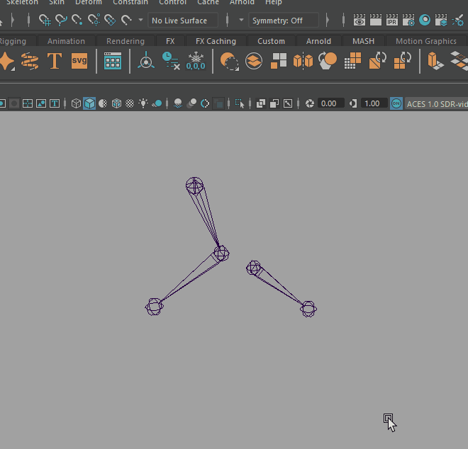
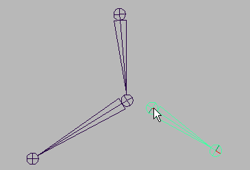
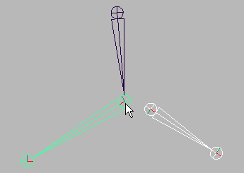
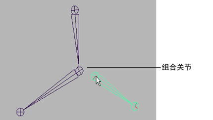
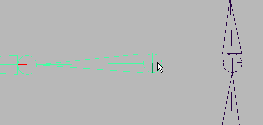
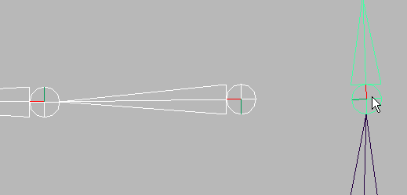
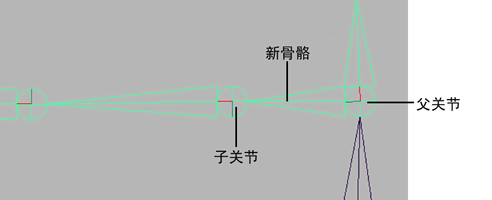

合并关节以连接它们
注： 可以使用绑定蒙皮将关节连接到角色的骨架，而不必拆离其蒙皮。但是，要使新连接的关节影响蒙皮，需要将其作为影响物添加到蒙皮（“蒙皮 > 编辑影响物 > 添加影响物”(Skin > Edit Influences > Add Influence)）。
注： 您还可以在 YouTube 上的 Maya 教学频道观看视频内容。
通过组合关节连接关节链
- 单击要连接到其他关节链的关节链的父关节。

- 在其他关节链或骨架中，按 Shift 键 (Shift) 的同时单击将替换之前的选定关节并成为其关节链的父关节。
注： 您选择的关节类型不能为根关节。
- 在“绑定”(Rigging)菜单集（按 F3 键）中，选择“骨架 > 连接关节”(Skeleton > Connect Joint) >
 。
。
将出现“连接关节选项”(Connect Joint Options)窗口。
- 启用“连接关节”(Connect Joint)，然后单击“连接”(Connect)来合并选定关节。
通过组合两个选定关节（其中第一个选定关节与第二个关节组合，并替换为第二个关节），“连接关节”(Connect Joint)连接关节链。
如果将关节连接到绑定角色的骨架，则该角色绑定姿势将自动调整。
通过连接选定关节和骨骼来连接关节链
- 单击要连接到其他关节链的关节链的父关节。

- 在其他关节链中，按 Shift 键的同时单击将成为之前的选定关节链父关节。
注： 您选择的关节类型不能为根关节。
- 在“绑定”(Rigging)菜单集（按 F3 键）中，选择“骨架 > 连接关节”(Skeleton > Connect Joint) > 。
将出现“连接关节选项”(Connect Joint Options)窗口。
- 启用“将关节设为父子关系”(Parent Joint)，然后单击“连接”(Connect)。
“将关节设为父子关系”(Parent Joint)通过在两个选定关节之间创建新骨骼（其中第一个选定关节是子关节，第二个关节是父关节）来连接关节链。
如果将关节连接到绑定角色的骨架，则该角色绑定姿势将自动调整。